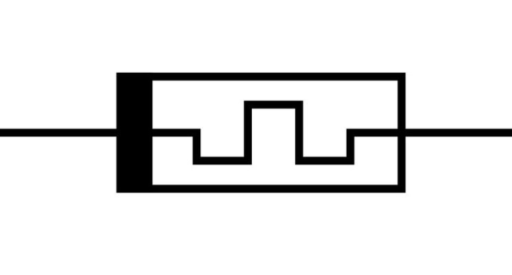
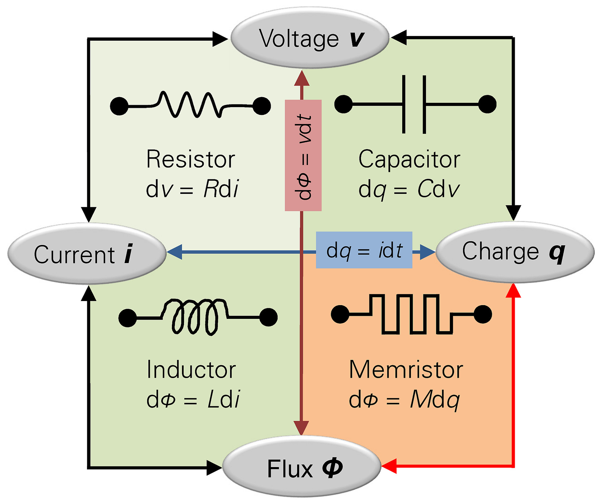
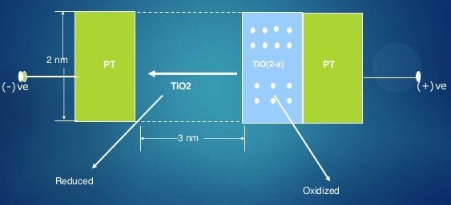

2017-07-13
Off-stage story of Memristor
প্রবন্ধ-ইংরেজি
For nearly 180 years, it has been accepted that there are three fundamental passive circuit elements,
- The Resistor (1827),
- The Capacitor (1745), and
- The Inductor (1831).
Based on the symmetry of the equations that govern the resistor, capacitor, and inductor, Dr. Chua hypothesized that a fourth passive device should exist that holds a relationship between magnetic flux and charge.

This would complete the circle where the resistor holds the relation between current and voltage, the inductor holds the relationship between current and flux, and the capacitor holds the relationship between voltage and charge. Dr. Chua proved that the abilities of the memristor could not be duplicated by any of the other three passive elements and that an active circuit that mimics the functionality of the theorized device would require approximately 25 transistors.
The memristor was predicted to be a two-terminal device with a dynamic resistance that is determined by the integral of the current flowing through it. Since this is an integral relationship, applying zero current would result in a constant charge, thus leaving the resistance constant. Therefore, the theorized memristor possesses the ability to retain a resistance value even after the power source is removed from the device. Unlike the capacitor and inductor, this is not an energy storage device, so the voltage must equal zero whenever the current goes to zero. This causes the I-V curve of the device to produce a pinched hysteresis loop, revealing that the device has a memory effect associated with it.
The first fabrication of a memristor device was developed by a research team at HP Labs. The research team at HP Labs was formed in 1995, and they initially started working on ways to further increase computing power once transistors reach their minimum size constraint. They decided the solution should be a nanoscale crossbar series of switches, which would be designed so the system could still function even if some of the components were defective.

The memristor first fabricated at HP Labs was a thin-film titanium oxide device. The device structure comprised a stoichiometric (TiO2) and an oxygen-deficient (TiO2-x) layer sandwiched between two platinum electrodes. Applying a voltage across a memristor causes the oxygen deficiencies in the TiO2-x layer to migrate, and this changes the thickness of the oxygen-deficient layer.
Likewise, this changes the resistance of the memristor device. Since the oxygen vacancies have low mobility, they tend to stay in the same position after the voltage source is removed [2]. This phenomenon shows that the memristor can be used as a non-volatile memory element.
The memristor can be seen as a dynamic resistor where the programmed resistance is dependent on the sum of the voltage applied. Memristors can be fabricated in crossbar arrays, which are very dense grids of memristors formed between rows and columns of intersecting wires.
Given the nanoscale dimensions of memristors and their unique properties, several innovative applications for memristors have been proposed. One of the more interesting applications for the memristor involves using the device to mimic the functionality of a synapse in brain tissue. Just as neural spikes are applied to a synapse to change the weight, voltage pulses can be applied to a memristor to change the resistance state. These nanoscale dimensions allow a high density of memristors to be packed onto a small chip area and thus allow a large number of synapses to be implemented. Another application area is the use of memristors as memory devices. This also allows for the development of a memory system with a much higher bit density when compared with most alternative technologies. Overall, the memristor has the potential to reduce energy consumption and the footprint area of a large number of electronic systems.

So many researchers examine the modeling of memristors and examine the design of several memristor circuits. The circuits were developed to include a Readout Integrated Circuit (ROIC), a memory circuit, and several neuromorphic computing circuits.
Nowadays, Memristor is a hot topic for researchers and scientists. It's pleasure to me that, my fourth research paper is based on memristor which was published in IEEE. It's postulated that the information in this article is collected from various journals. It's also mentioned that these devices are intended for applications in nanoelectronic memories, computer logic, and neuromorphic or neuro-memristive computer architectures. Commercial availability of memristor memory has been estimated today. In March 2012, a team of researchers from HRL Laboratories and the University of Michigan announced the first functioning memristor array built on a CMOS chip. According to Allied Market Research, the memristor market was worth $3.2 million in 2015 and will be worth $79.0 million by 2022.